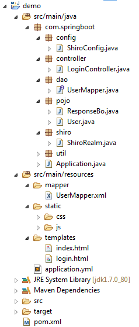
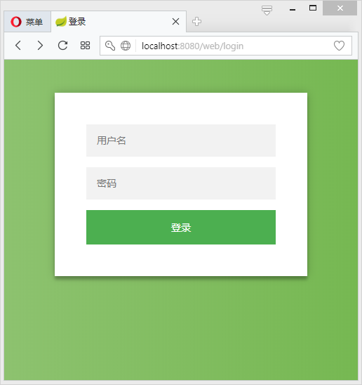
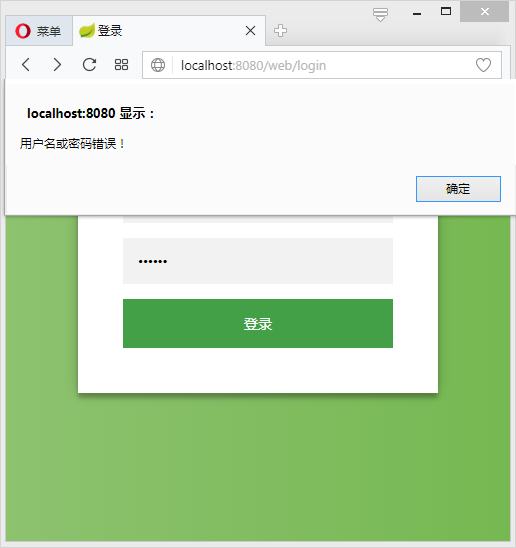
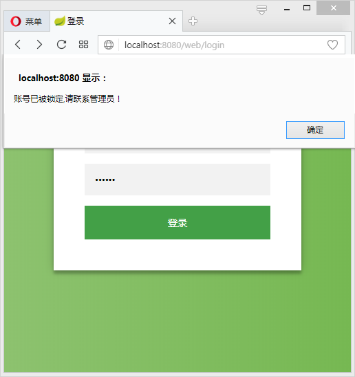
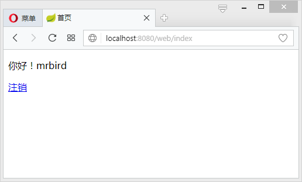

在Spring Boot中集成Shiro进行用户的认证过程主要可以归纳为以下三点：
1、定义一个ShiroConfig，然后配置SecurityManager Bean，SecurityManager为Shiro的安全管理器，管理着所有Subject；
2、在ShiroConfig中配置ShiroFilterFactoryBean，其为Shiro过滤器工厂类，依赖于SecurityManager；
3、自定义Realm实现，Realm包含doGetAuthorizationInfo()和doGetAuthenticationInfo()方法，因为本文只涉及用户认证，所以只实现doGetAuthenticationInfo()方法。
引入依赖
首先可根据文章《开启Spring Boot》搭建一个Spring Boot Web程序，然后引入Shiro、MyBatis、数据库和thymeleaf依赖：
ShiroConfig
定义一个Shiro配置类，名称为ShiroConfig：
需要注意的是filterChain基于短路机制，即最先匹配原则，如：
其中anon、authc等为Shiro为我们实现的过滤器，具体如下表所示：
| Filter Name | Class | Description |
|---|---|---|
| anon | org.apache.shiro.web.filter.authc.AnonymousFilter | 匿名拦截器，即不需要登录即可访问；一般用于静态资源过滤；示例/static/**=anon |
| authc | org.apache.shiro.web.filter.authc.FormAuthenticationFilter | 基于表单的拦截器；如/**=authc，如果没有登录会跳到相应的登录页面登录 |
| authcBasic | org.apache.shiro.web.filter.authc.BasicHttpAuthenticationFilter | Basic HTTP身份验证拦截器 |
| logout | org.apache.shiro.web.filter.authc.LogoutFilter | 退出拦截器，主要属性：redirectUrl：退出成功后重定向的地址（/），示例/logout=logout |
| noSessionCreation | org.apache.shiro.web.filter.session.NoSessionCreationFilter | 不创建会话拦截器，调用subject.getSession(false)不会有什么问题，但是如果subject.getSession(true)将抛出DisabledSessionException异常 |
| perms | org.apache.shiro.web.filter.authz.PermissionsAuthorizationFilter | 权限授权拦截器，验证用户是否拥有所有权限；属性和roles一样；示例/user/**=perms["user:create"] |
| port | org.apache.shiro.web.filter.authz.PortFilter | 端口拦截器，主要属性port(80)：可以通过的端口；示例/test= port[80]，如果用户访问该页面是非80，将自动将请求端口改为80并重定向到该80端口，其他路径/参数等都一样 |
| rest | org.apache.shiro.web.filter.authz.HttpMethodPermissionFilter | rest风格拦截器，自动根据请求方法构建权限字符串；示例/users=rest[user]，会自动拼出user:read,user:create,user:update,user:delete权限字符串进行权限匹配（所有都得匹配，isPermittedAll） |
| roles | org.apache.shiro.web.filter.authz.RolesAuthorizationFilter | 角色授权拦截器，验证用户是否拥有所有角色；示例/admin/**=roles[admin] |
| ssl | org.apache.shiro.web.filter.authz.SslFilter | SSL拦截器，只有请求协议是https才能通过；否则自动跳转会https端口443；其他和port拦截器一样； |
| user | org.apache.shiro.web.filter.authc.UserFilter | 用户拦截器，用户已经身份验证/记住我登录的都可；示例/**=user |
配置完ShiroConfig后，接下来对Realm进行实现，然后注入到SecurityManager中。
Realm
自定义Realm实现只需继承AuthorizingRealm类，然后实现doGetAuthorizationInfo()和doGetAuthenticationInfo()方法即可。这两个方法名乍看有点像，authorization发音[ˌɔ:θəraɪˈzeɪʃn]，为授权，批准的意思，即获取用户的角色和权限等信息；authentication发音[ɔ:ˌθentɪ’keɪʃn]，认证，身份验证的意思，即登录时验证用户的合法性，比如验证用户名和密码。
因为本节只讲述用户认证，所以doGetAuthorizationInfo()方法先不进行实现。
其中UnknownAccountException等异常为Shiro自带异常，Shiro具有丰富的运行时AuthenticationException层次结构，可以准确指出尝试失败的原因。你可以包装在一个try/catch块，并捕捉任何你希望的异常，并作出相应的反应。例如：
虽然我们可以准确的获取异常信息，并根据这些信息给用户提示具体错误，但最安全的做法是在登录失败时仅向用户显示通用错误提示信息，例如“用户名或密码错误”。这样可以防止数据库被恶意扫描。
在Realm中UserMapper为Dao层，标准的做法应该还有Service层，但这里为了方便就不再定义Service层了。接下来编写和数据库打交道的Dao层。
数据层
首先创建一张用户表，用于存储用户的基本信息（基于Oracle 11g）：
数据源的配置这里就不贴出来了，具体可参考源码，或者参考https://mrbird.cc/Spring-Boot%E4%B8%AD%E4%BD%BF%E7%94%A8Mybatis.html。
库表对应的实体类：
定义接口UserMapper：
xml实现：
数据层准备完了，接下来编写login.html和index.html页面。
页面准备
编写登录页面login.html：
主页index.html：
页面准备完毕，接下来编写LoginController。
Controller
LoginController代码如下：
登录成功后，根据之前在ShiroConfig中的配置shiroFilterFactoryBean.setSuccessUrl("/index")，页面会自动访问/index路径。
测试
最终项目目录如下图所示：

启动项目，分别访问：
可发现页面都被重定向到http://localhost:8080/web/login：

当输入错误的用户信息时：

用test的账户登录（test账户的status为0，已被锁定）：

当输入正确的用户名密码时候：

点击注销连接，根据ShiroConfig的配置filterChainDefinitionMap.put("/logout", "logout")，Shiro会自动帮我们注销用户信息，并重定向到/路径。
Spring Boot集成Shiro进行用户认证到此就结束了，源码参见https://drive.google.com/open?id=1iVgkhy0KrSgz1qfXsiO5Jsb3655n3kkg